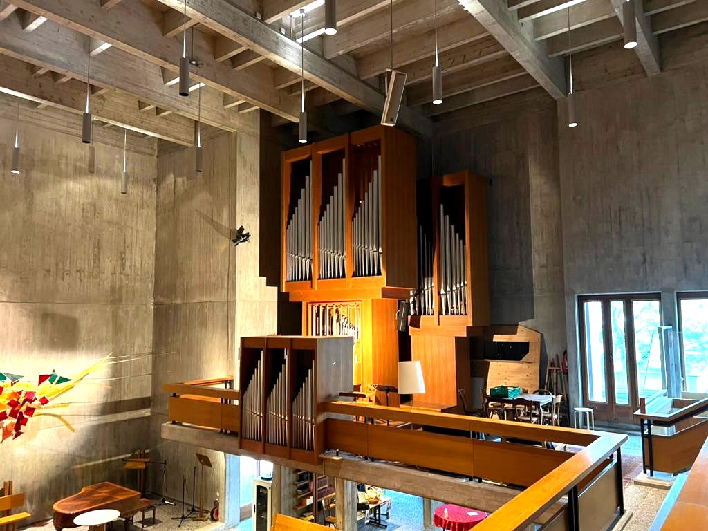
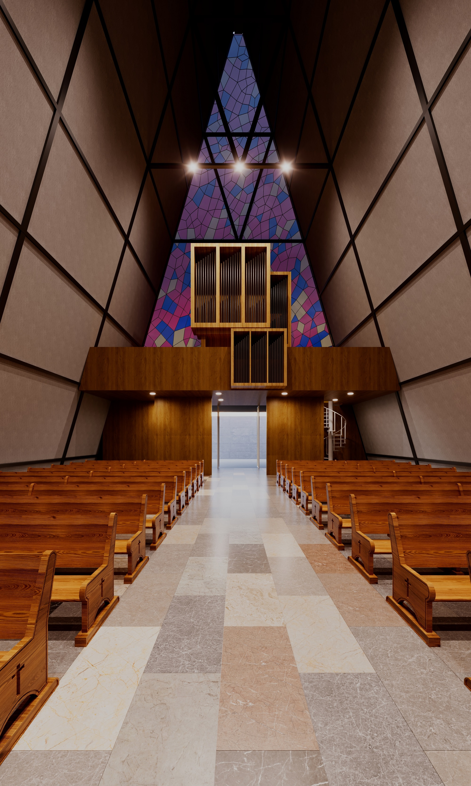
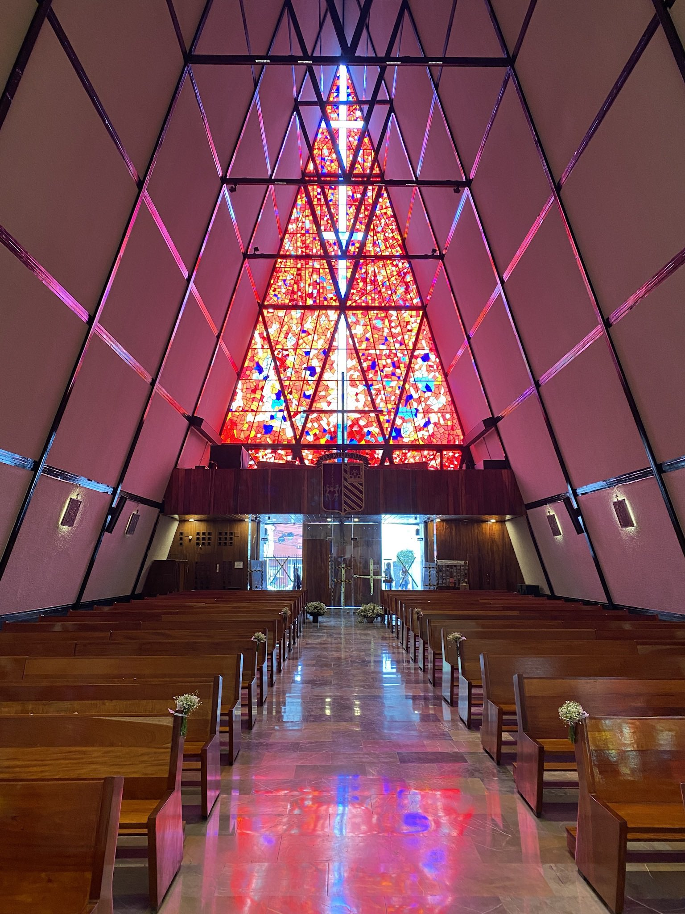
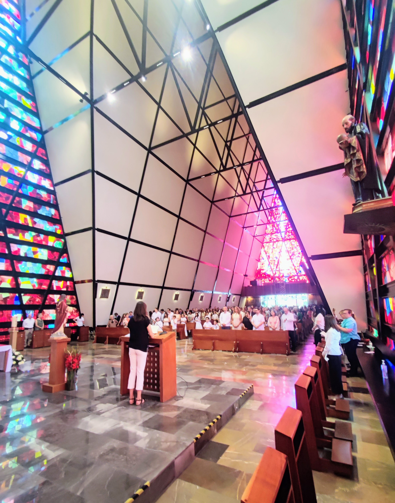
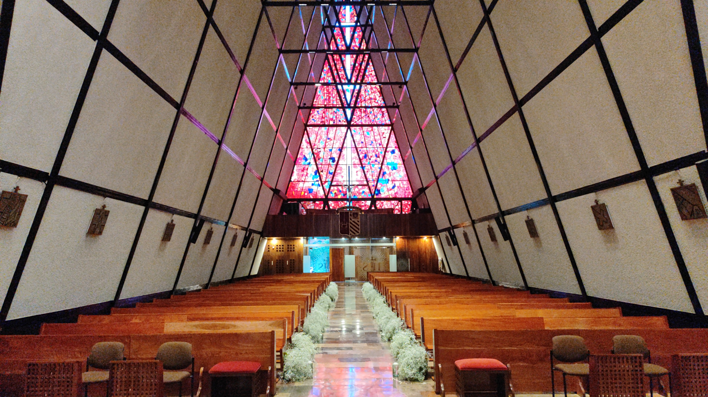
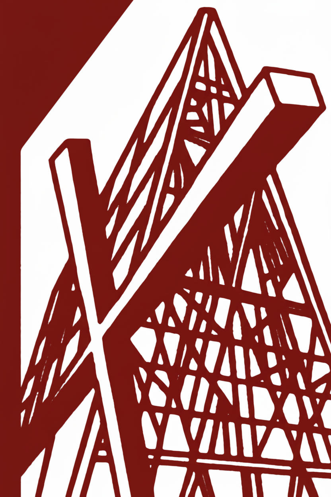
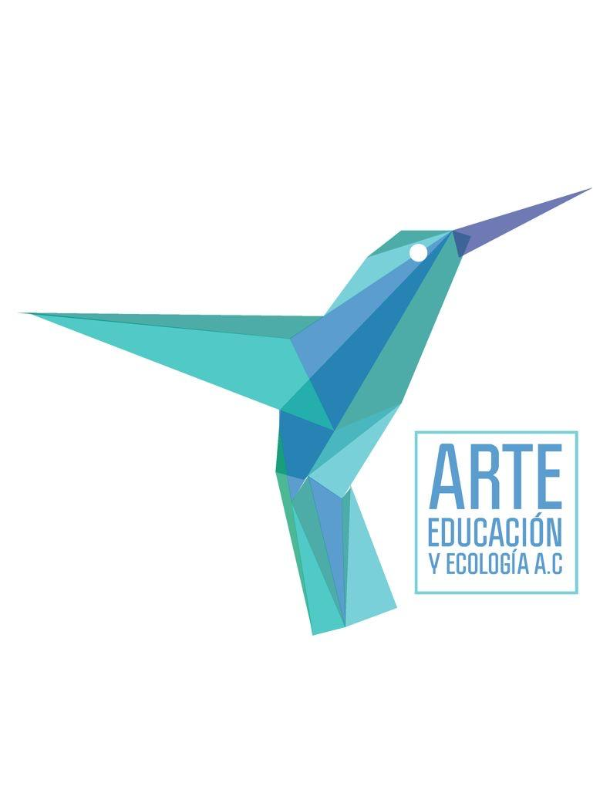

Un proyecto cultural y espiritual · Suiza → México
Un magnífico órgano tubular suizo busca hogar. Su templo en Ginebra será demolido. México tiene la oportunidad única de rescatarlo.


Visualización · San Ignacio de LoyolaLeO es un magnífico órgano tubular suizo, con tres teclados y miles de tubos, que durante décadas llenó de música y vida el templo de La Servette, en Ginebra. Hoy, ese templo está por ser demolido… y LeO necesita un nuevo hogar.
El maestro Diego Innocenzi, organista en Ginebra, en el marco de los vínculos académicos y artísticos establecidos con nuestra institución, invitó a nuestro comité a participar en el concurso internacional para la asignación del órgano. Tras ese concurso, nuestro proyecto fue elegido.
Nuestra meta: traer a LeO a México y darle una nueva vida en la Iglesia de San Ignacio de Loyola, en Polanco, donde el arte, la música y la fe vuelvan a encontrarse.
Tu donativo se transforma en música.
Un Nuevo Hogar para LeO · nuevohogarparaleo.comAdecuaciones estructurales
Reforzar el coro de San Ignacio: estructura, acústica, condiciones eléctricas y climáticas.
Desmontaje en Ginebra
Ejecución especializada pieza por pieza. Fecha límite: junio de 2026.
Transporte internacional
Logística y gestión aduanal para un traslado integral y seguro a México.
Instalación y restauración
Ensamblaje, reentonación y adaptación al nuevo espacio con organeros certificados.
Inauguración
Conciertos inaugurales, actividades académicas y memoria documental del proyecto.



El órgano ya ha sido donado. Ahora, nuestro desafío es financiar su traslado, restauración e instalación, un proceso minucioso que requiere cuidado artesanal y amor por el detalle.
Cada aportación ayuda a que LeO llegue y cobre vida en su nuevo hogar. Puedes contribuir con donativos, servicios, materiales, o simplemente compartiendo este mensaje con quienes puedan hacerlo posible.
Proyecto administrado por Arte, Educación y Ecología A.C.
Autorización SAT No. 700-02-05-2017-03718
Realiza tu donativo
Transferencia bancaria · Deducible de impuestos
Beneficiario
Arte, Educación y Ecología A.C.
Banco
Banamex
CLABE interbancaria
002290701634071732Después de tu transferencia:
Paroisse Protestante Rive Droite
Donantes originales · Ginebra, Suiza
En sesión del 11 de junio de 2025, el Consejo de la Parroquia eligió oficialmente a nuestra propuesta como ganadora del concurso internacional para recibir el órgano.

Iglesia de San Ignacio de Loyola
Hogar receptor · Polanco, CDMX
El P. Luis González-Cosío Elcoro, SJ, Rector de la parroquia, ha aceptado oficialmente el instrumento con "espíritu de responsabilidad, gratitud y esperanza".
Comité "Un Nuevo Hogar para LeO"
Coordinación del proyecto · Ciudad de México
El comité gestiona la planeación integral del proyecto, encabezado por el maestro Víctor Contreras, concertista y profesor del Conservatorio Nacional de Música, designado organista titular del instrumento.

Arte, Educación y Ecología A.C.
Administración transparente de fondos
Organismo responsable de la administración de los fondos y la emisión de recibos fiscales deducibles de impuestos. Autorización SAT No. 700-02-05-2017-03718.
Puedes ayudar con donativos, servicios, materiales, o simplemente compartiendo este mensaje con quienes puedan hacerlo posible.